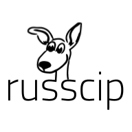
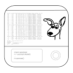

Mohammed Ghannam
PhD candidate at Zuse Institute Berlin, working on mixed-integer programming solvers, and a bunch of things around them.
research
open source
-

-

PhD candidate at Zuse Institute Berlin, working on mixed-integer programming solvers, and a bunch of things around them.

